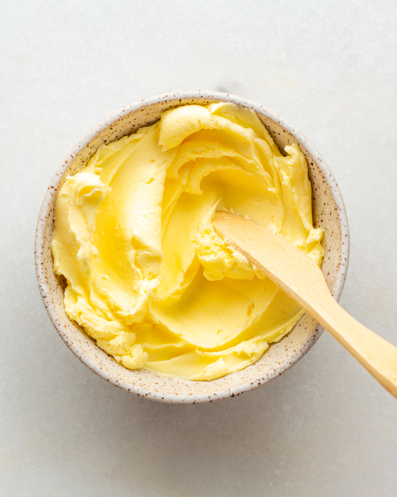

Featured Recipes

Homemade Butter
Discover the joy of making rich, creamy butter from scratch using just two simple ingredients—fresh cream and a little salt. Perfect for spreading on warm bread, baking, or adding a touch of homemade flavor to your favorite dishes. This recipe is a delightful way to appreciate the freshness of dairy straight from the farm!
Ingredients:
- Fresh cream from Spring Lake Farms
- Salt (optional).
Instructions:
- Add the cream to an electric mixer. Start whipping the cream on low speed until it thickens slightly.
- Gradually increase the mixer speed to medium-high and continue to whip for 5-7 minutes, scraping down the sides every now and then. Continue mixing past the whipped cream phase, and you'll see the cream begin to break into butter (fat molecules) and liquid (buttermilk).
- Remove the butter from the mixer (save the buttermilk for use later!) and squeeze out any excess moisture by repeatedly squeezing the butter through your hands.
- Quickly rinse the butter under ice cold water and add salt to taste.
- Store in either an air-tight container or rolled up in parchment paper. Keep it in the fridge and use within 10-14 days.